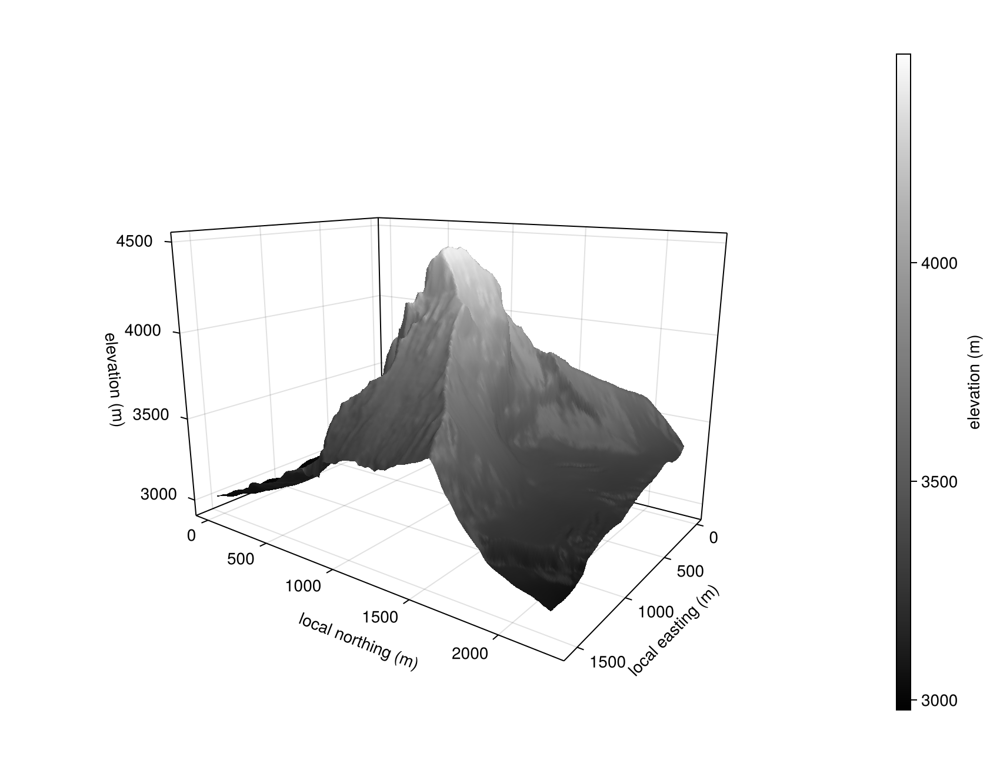
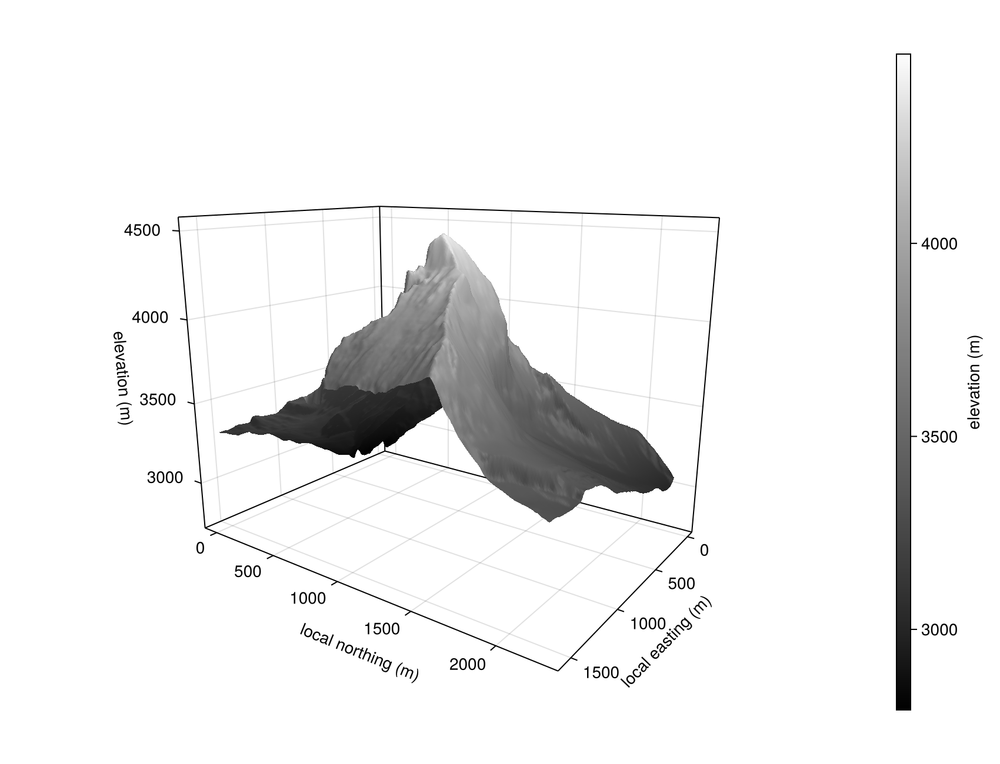
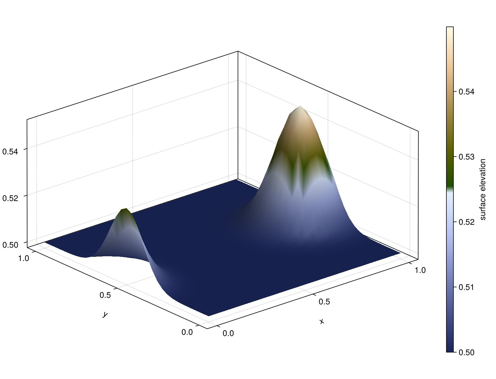
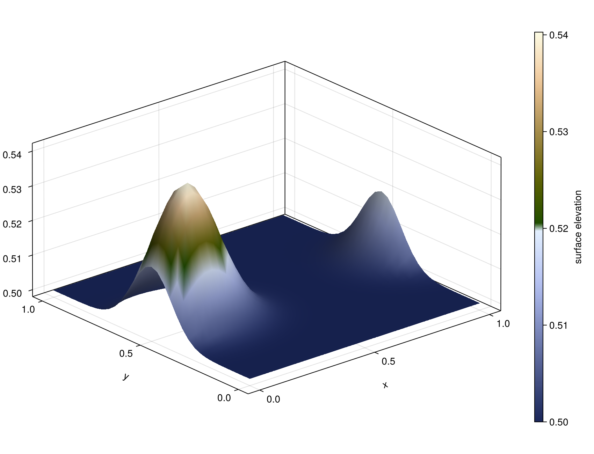

Marker surface
In three-dimensional geodynamic modeling it is often useful to track a free surface (e.g. the topographic interface between rock and a sticky-air layer). JustPIC.jl provides the MarkerSurface object for this purpose: a structured 2D height field topo[i,j] defined on a regular horizontal vertex mesh (xv[i], yv[j]), living on top of the 3D staggered grid.
We can instantiate a marker surface at a constant elevation h as:
surf = init_marker_surface(backend, xv, yv, h)
where backend is the device backend, xv and yv are finite, strictly increasing 1D arrays/ranges of the horizontal grid vertices (lengths nx+1 and ny+1), and h is either a scalar elevation or an (nx+1)×(ny+1) array of initial heights. Optional keyword arguments periodic_1 and periodic_2 enable periodic boundary conditions in the first / second horizontal direction.
We can also overwrite the topography of an existing surface from a 2D array:
# set topography from a pre-computed height field
z_init = [0.4 + 0.1 * sin(2π * xv[i]) * cos(2π * yv[j])
for i in 1:length(xv), j in 1:length(yv)]
set_topo_from_array!(surf, z_init)The surface is then advected one time step with:
advect_marker_surface!(surf, V, grid_vxi, dt)where V = (Vx, Vy, Vz) is a tuple of 3D velocity arrays and grid_vxi = (grid_vx, grid_vy, grid_vz) gives one (x, y, z) coordinate tuple per staggered component. Each velocity-array size must equal the lengths of its own coordinate tuple. dt is the time step. The driver interpolates the staggered velocity field onto surface nodes, advects the height field with a deformed-grid triangle scheme, and optionally smooths slopes exceeding max_slope_angle (default 45°).
Coordinates may be ranges or vectors, and both are fully supported. A uniformly spaced grid passed as a range lets the interpolation locate the containing cell by arithmetic; the same grid passed as a vector costs a binary search per surface node instead, roughly tripling the interpolation time. Non-uniformly spaced grids — adaptively refined meshes, for instance — are vectors by nature and take the search path.
For coupling with a Stokes solver, the volumetric fraction of each cell that lies below the free surface (the "rock fraction") at every staggered-grid position is computed by:
compute_rock_fraction!(ratios, surf, xvi, dxi)ratios is a named tuple of arrays sized at cell centres, vertices, faces, and edges. The function evaluates the geometric fraction of every corresponding control volume from a piecewise-planar surface, splitting each cell into eight triangles that meet at the cell center.
Examples
Run the complete CPU examples, which construct the component-specific staggered grids and regenerate the figures below:
julia --project=docs docs/examples/marker_surface.jlThe batch example uses CairoMakie, colouring synthetic surfaces with Makie's :oleron colormap and Matterhorn elevations with :grayC10. GLMakie 0.13 remains available in the docs environment for interactive rendering.
The nonperiodic figures use a 193×193, approximately 8 m sample centered on the Matterhorn summit (45.9763° N, 7.6586° E). It combines swisstopo's 0.5 m swissALTI3D DEM on the Swiss side with ARPA Piemonte's transboundary terrain service on the Italian side, whose Valle d'Aosta input is a 2 m LiDAR DTM. Both sources are resampled to the example grid, preserving the distinct cross-border summit kink. The simulation rescales elevations to its unit-height domain, but the Matterhorn figures map them back to the original DEM elevation range and show local horizontal coordinates in meters. The periodic figures retain a synthetic surface: an isolated mountain is not a periodic terrain field.


Periodic boundary conditions
Pass periodic_1 = true and/or periodic_2 = true to init_marker_surface to enable wrap-around boundaries in the first (x) or second (y) horizontal direction. The flags are stored on the surface object and read automatically by every advection and smoothing call — no need to forward them explicitly.
surf = init_marker_surface(backend, xv, yv, 0.5;
periodic_1 = true, # x periodic
periodic_2 = false) # y non-periodicUnder periodic boundaries the ghost cells used by the advection stencil wrap to the opposite side instead of being linearly extrapolated, the slope-limiter's neighbour lookups use mod1 indexing, and the redundant boundary nodes (topo[1, :] and topo[end, :]) are kept synchronised after every update. This follows the same convention used by move_particles!(…; periodic_1, periodic_2, periodic_3) in JustPIC's particle advection.
The periodic figures below translate a Gaussian bump with a uniform Vx = 0.2 for 25 steps of dt = 0.05. Centered at x = 0.9 to begin with, it crosses the right boundary and re-enters on the left, ending near x = 0.16 — the rise at both x edges of either figure is the same bump seen across the seam. scripts/marker_surface_advection_periodic.jl runs the same setup with a live GLMakie view.


Multi-GPU / MPI (ImplicitGlobalGrid)
The marker surface works with ImplicitGlobalGrid.jl domain decomposition, including full 3D (x, y and z) decomposition. Build the surface from the local (rank) vertex coordinates; when a global grid is active, advect_marker_surface! and maximum-angle smoothing automatically exchange the topography's x/y halo between neighbouring ranks (ImplicitGlobalGrid.update_halo!). When the grid is decomposed in z, the surface velocity is additionally combined across each z-column so every node is interpolated from the rank whose slab contains the surface elevation — no user action required.
me, dims, nprocs = init_global_grid(nx, ny, nz; periodx = 1, periody = 1)
# local vertex coordinates of this rank
xv = [x_g(i, dx, Vx) for i in 1:(nx + 1)]
yv = [y_g(j, dy, Vy) for j in 1:(ny + 1)]
surf = init_marker_surface(backend, xv, yv, initial_elevation)
for _ in 1:nt
advect_marker_surface!(surf, V, grid_vxi, dt) # halo exchange included
endNotes:
- Under MPI, set periodicity through
init_global_grid(periodx/periody) and leaveperiodic_1/periodic_2of the surface asfalse— the local flags wrap within the rank-local array and are only meant for single-device runs. - If you modify
surf.topomanually, callupdate_surface_halo!(surf)afterwards to synchronize the ranks. compute_avg_topoperforms an owned-node global reduction, excluding overlapping x/y nodes and duplicate z-column replicas.
Limitations
- Topography, surface velocities, and horizontal coordinates use the promoted floating-point type of
xv,yv, and the initial elevation. - Under z-decomposition,
interpolate_velocity_to_surface_vertices!performs a few smallAllreduces per call over each z-column, directly on the device velocity arrays (no host staging). On GPU this requires GPU-aware MPI — the sameIGG_CUDAAWARE_MPI=1/IGG_ROCMAWARE_MPI=1setupImplicitGlobalGridalready uses for its halo exchange. Grids decomposed only in x/y have no such requirement.
API
JustPIC.MarkerSurface — Type
MarkerSurface{Backend, T2, TV, TB, TW} <: AbstractParticlesA 3D free surface tracker using a structured marker grid. The surface is represented as a 2D grid of topography values (z-heights) at corner nodes.
Fields
topo::T2— topography (z-elevation) at grid vertices, size(nx+1, ny+1)topo0::T2— topography from the previous time stepvx::T2— x-velocity interpolated to surface nodesvy::T2— y-velocity interpolated to surface nodesvz::T2— z-velocity interpolated to surface nodesxv::TV— x-coordinates of surface grid verticesyv::TV— y-coordinates of surface grid verticesperiodic_1::Bool— periodic boundary in xperiodic_2::Bool— periodic boundary in yadvection_valid::TB— persistent validity mask for topography advectionsmoothing_cell_topo::TW— persistent cell-centered smoothing workspacesmoothing_steep::TB— persistent steep-cell maskz_ownership::TW— persistent z-column ownership weights
JustPIC.init_marker_surface — Function
init_marker_surface(::Type{backend}, xv, yv, initial_elevation;
periodic_1=false, periodic_2=false)Create a MarkerSurface that tracks a 3D free surface on the grid defined by vertex coordinates xv and yv.
The topography is stored at the grid vertices (corner nodes), matching LaMEM's FreeSurf approach where the surface DMDA has the same (x,y)-resolution as the staggered-grid corner nodes.
Arguments
backend: KernelAbstractions backend type such asCPU,CUDA,AMDGPU,Metalxv: 1D array/range of x-coordinates of grid vertices (lengthnx+1)yv: 1D array/range of y-coordinates of grid vertices (lengthny+1)initial_elevation: scalar or 2D array(nx+1)×(ny+1)of initial z-elevationsperiodic_1,periodic_2: periodic boundary conditions in x and y (defaultfalse)
Returns
A MarkerSurface instance with topography initialised to initial_elevation.
JustPIC.set_topo_from_array! — Function
set_topo_from_array!(surf::MarkerSurface, z::AbstractMatrix)Set the surface topography from a 2D array z of size (nx+1, ny+1). Also copies the values into topo0.
JustPIC.compute_avg_topo — Function
compute_avg_topo(surf::MarkerSurface)Compute and return the average topography over all surface vertices. Duplicated periodic seam nodes are counted once. Under MPI, overlapping x/y nodes and replicated z-columns are counted once through an owned-node global reduction. Note: forces a device→host scalar transfer on GPU; call only outside hot loops.
JustPIC.interpolate_velocity_to_surface_vertices! — Function
interpolate_velocity_to_surface_vertices!(surf::MarkerSurface, V, grid_vxi)Interpolate the 3D velocity field V = (Vx, Vy, Vz) onto the free surface nodes. Each surface node at position (xv[i], yv[j], topo[i,j]) receives trilinearly interpolated velocity values.
Arguments
surf: theMarkerSurfaceV: tuple(Vx, Vy, Vz)of 3D velocity arraysgrid_vxi: tuple of component grids(grid_vx, grid_vy, grid_vz), where each component grid is its own(x, y, z)coordinate tuple
JustPIC.advect_surface_topo! — Function
advect_surface_topo!(surf::MarkerSurface, dt)Advect the topography on the free surface mesh using the velocity field already interpolated onto the surface nodes (surf.vx, surf.vy, surf.vz).
- Build ghost coordinates and field values outside the domain: periodic images of the wrapped nodes when periodic, otherwise extrapolated coordinates with field values clamped to the boundary node.
- For each surface node, build a local 3×3 "deformed grid" using neighboring node positions displaced by
dt*v. - Subdivide the deformed cell into 16 triangles (9 corner + 4 midpoint nodes).
- Find which triangle contains the target position and perform barycentric interpolation of the z-coordinate.
1 ------- 2 ------- 3
| \ / \ / |
| \ / \ / |
| \ / \ / |
| 10 11 |
| / \ / \ |
| / \ / \ |
| / \ / \ |
4 ------- 5 ------- 6
| \ / \ / |
| \ / \ / |
| \ / \ / |
| 12 13 |
| / \ / \ |
| / \ / \ |
| / \ / \ |
7 ------- 8 ------- 9Arguments
surf: theMarkerSurfacedt: time step
JustPIC.advect_marker_surface! — Function
advect_marker_surface!(surf::MarkerSurface, V, grid_vxi, dt;
max_slope_angle=45)Main driver to advect the free surface:
- Interpolate velocities from the 3D grid to surface nodes
- Advect topography using the deformed-grid triangle method
- Smooth topography spikes (if
max_slope_angle > 0)
Arguments
surf: theMarkerSurfaceV: tuple(Vx, Vy, Vz)of 3D velocity arraysgrid_vxi: tuple of component grids(grid_vx, grid_vy, grid_vz)dt: time stepmax_slope_angle: maximum slope angle in degrees (default45;≤ 0disables smoothing)
JustPIC.smooth_surface_max_angle! — Function
smooth_surface_max_angle!(surf::MarkerSurface, max_slope_angle)Smooth the topography where the slope angle exceeds max_slope_angle (in degrees, matching the MarkerChain smooth_slopes! convention).
This mirrors LaMEM's FreeSurfSmoothMaxAngle:
- Scan all cells, compute the max slope (tan) from the 4 corner nodes and the average cell height; mark cells exceeding
tan(max_angle). - For each node touching at least one marked cell, replace its topography with the average of the (up to 4) surrounding cell-center heights.
Arguments
surf: theMarkerSurfacemax_slope_angle: maximum slope angle in degrees (e.g.45.0)
JustPIC.update_surface_halo! — Function
update_surface_halo!(surf::MarkerSurface)Exchange the x/y MPI halo of surf.topo between neighbouring ranks of the active ImplicitGlobalGrid global grid. No-op when no global grid is initialized (serial runs).
Called automatically at the end of advect_surface_topo!, smooth_surface_max_angle!; only needed explicitly after modifying surf.topo by hand.
Notes
surfmust be built from the local (rank) vertex coordinates.- Under MPI, use the global-grid periodicity (
periodx/periodyininit_global_grid) and leavesurf.periodic_1/periodic_2asfalse; the local periodic flags wrap within the rank-local array.
JustPIC.compute_rock_fraction! — Method
compute_rock_fraction!(ratios, surf::MarkerSurface, xvi, dxi)Compute the rock fraction (fraction of each cell volume below the free surface) at all staggered-grid positions and store them in ratios.
This is the 3D equivalent of compute_rock_fraction!(ratios, chain::MarkerChain, xvi, dxi). The ratios struct must have fields .center, .vertex, .Vx, .Vy, .Vz, .xy, .yz, and .xz.
Arguments
ratios: struct with center, vertex, face, and edge arrayssurf: theMarkerSurfacexvi: tuple(xv, yv, zv)of 1D vertex coordinate arraysdxi: tuple(dx, dy, dz)of grid spacings (kept for API consistency with the 2D version; the 3D kernel usesxvidirectly)